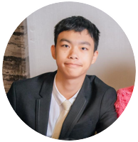

<html>
<head>
    <meta charset="utf-8">
    <meta name="viewport" content="width=device-width, initial-scale=1">
    <link href="https://fonts.googleapis.com/css?family=Noto+Sans+TC:100,300,400,500&amp;subset=chinese-traditional" rel="stylesheet">
    <link rel=stylesheet type="text/css" href="./index.css">
    <script src="//code.jquery.com/jquery-3.3.1.js">
    </script>
    
    <title>張家銨 Jia-An Chang</title>
    <nav>
      <ul>
        <li><button id="home">首頁</button></li>
        <li><button id="intro">個人介紹</button></li> 
        <li><button id="exp">基本資料</button></li>  
        <li><button id="skill">技能與作品集</button></li>  
      </ul>
    </nav>
    <div id="bar"></div>
  </head>
  <body>
    <div id="container"></div>
    <script>
        var now=0;
        //Elements of home page
        const name='<h1>張家銨 Jia An Chang</h1>';
        const profile='';
        const lg_btn='<div id="lg_btn"><button id="Ch">繁體中文</button><button id="En">English</button><div>';
        const contact='<p id="contact">國立成功大學 資訊工程學系學士班<br/>phone: 0928614772<br/>email:  at5lp6andy@gmail.com<br/>Github: https://github.com/JiaAnTW</p>';
        
        $("#En").click(function(){
          document.location.href='./En.html';
          });
        

          //Elements of home page
          const statement='高中時開始自學程式，大一跳過基礎直接修完資工系程式設計(二)後更加確認了自己的興趣。我喜歡在研究程式碼的同時，去了解並學習和該專案有關的知識(如:前端的UI/UX、後端的商業邏輯)，試著讓自己的專案人性化、涵蓋相關領域本身的特點。<br/><br/>大二那年轉到了資工系。<br/><br/>在過往沒有什麼認識的人的修課背景下，自學變成我很熟悉且樂在其中的事情(目前正在自學python及加強自己對前端網頁程式設計的知識)，我喜歡為了解決生活中的問題而去學習技術。因為自學過程發現自己對語言細節規定的了解不夠扎實，我正在尋求一份「c++或前端網頁程式設計的實習機會」，希望透過實戰補足自己疏漏的技能。';

        //Elements of experience page
        const school='<span id="school">姓名: 張家銨<br/><br/> 生日 : 1998/11/30<br/><br/> 服役狀況: 尚未服役<br/><br/>學歷:<br/>2017.09~2018.08 — 國立成功大學 交通管理科學學系學士班 <br/>2018.09~現今— 國立成功大學 資訊工程學系學士班(大二轉系生)</span>';
        
        //Elements of skill page
        const skill_list='<span id="skill_list">語言/框架: C++, html5, css, javascript(ES6), jquery, React.js<br/>(點選下面圖片可觀看原始碼)</span>';
        const project_asset=[
          {pic: "./sudoku.png", topic:"數獨GUI", tool:"C++(Qt environment)",number: 0},
          {pic: "./c++.png", topic:"你看起來很想學C++", tool:"C++(Qt environment)",number: 1},
          {pic: "./tcm.png", topic:"2019成大交管營官網", tool:"HTML5, css3, javascript(ES6), React.js",number: 2},
          {pic: "./ppt.png", topic:"其他: 簡報作品", tool:"以PowerPoint為主，Adobe AI/PS為輔",number: 3},
          ];

        const project=project_asset.map(Object=>{
            const link=[
              'https://github.com/JiaAnTW/NCKU_1stGrade_3_CSProgramDesign2_Project2',
              'https://github.com/JiaAnTW/NCKU_1stGrade_3_CSProgramDesign2_Project3',
              'https://github.com/JiaAnTW/NCKU_TCM2019',
              'https://1drv.ms/f/s!AqBwgwb-3eO4gmrrmgyxguaOtw53',
            ];
            const describe=[
            '大一下專案作業，課程要求在Qt環境下製作可遊玩的GUI數獨遊戲(能作答、檢查答案)及自動解題，我在這之外額外做了單機雙人對戰比分系統、難度分級系統。',
            '大一下專案作業，課程要求在Qt環境下加入多型、製作類似「雷霆戰機」的GUI遊戲。我將一般人學習C++的過程結合在遊戲中，並額外加入了成就紀錄系統，玩家在關掉遊戲後仍可保有其獲得成就，並能在下次遊玩時檢視。',
            '大二上使用create_react_app製作，包含手機版和電腦版。程式、美術設計、UI/UX設計、伺服器架設......跟網站有關一切皆為我自己製作。由於剛開始製作時自己的RWD技術不成熟，改以將電腦版網頁和手機版網頁架在不同伺服器，偵測使用者載具後導向對應網站。<a href="http://wintercamp.tcm.ncku.edu.tw/#/" target="_blank" style="font-weight:500;color:rgb(235, 237, 236)">網站連結</a>',
            '在大一上時曾在社團性質的簡報工作坊擔任工作人員，因而對簡報產生興趣。這些是目前大學以來我所製作的簡報，我希望能把簡報「資訊傳達」的觀念和技術融入自己製作的網站中',
            ];
            return '<div id="project_container"><a href="'+link[Object.number]+'" target="_blank"></a> '+' <h2 id="project_topic">'+ Object.topic +'</h2>'+'<span id="project_content">'+Object.tool+'<br/><br/>'+describe[Object.number]+'</span></div>';
        }).join('');

        // Functions of RWD and change window
        
        const changeWindow=(type)=>{
          if(type===0){
            now=0;
            $('#bar').css("left","10.45rem");
            $("#container").fadeOut("slow",function(){
              document.getElementById("container").innerHTML=name+profile+contact+lg_btn;
              });
            $("#container").fadeIn("slow");
          }
          else if(type===1){
            now=1;
            $('#bar').css("left","13.8rem");
            $("#container").fadeOut("slow",function(){
              document.getElementById("container").innerHTML='<span id="statement">'+statement+'</span>';
              });
            $("#container").fadeIn("slow");
          }
          else if(type===2){
            now=2;
            $('#bar').css("left","17.65rem");
            $("#container").fadeOut("slow",function(){
              document.getElementById("container").innerHTML=school;
              });
            $("#container").fadeIn("slow");
          }

          else if(type===3){
            now=3;
            $('#bar').css("left","22rem");
            $("#container").fadeOut("slow",function(){
              document.getElementById("container").innerHTML=skill_list+project;
              });
            $("#container").fadeIn("slow");
          }
          else if(type==='m'){
            document.getElementById("container").innerHTML=name+profile+contact+lg_btn+'<span id="statement">'+statement+'</span>'+school+skill_list+project;
          }
          else
            document.getElementById("container").innerHTML=name+profile+contact+lg_btn;  
        }

        //Inital render
        if($(window).width()<=769)
          changeWindow('m');
        else
          changeWindow(-1);

        //rerender when the screen size changed

        $(document).ready(function(){
            $(window).resize(function() {
                  if($(window).width()<=769)
                    changeWindow('m');
                  else
                    changeWindow(-1);
              });
        });

        //go to home page
        $("#home").click(function(){
            if($(window).width()>=769)
              changeWindow(0);
          });

      //go to introduction page
      $("#intro").click(
          function(){
            if($(window).width()>=769)
              changeWindow(1);
            }
        );

        //go to experience page
        $("#exp").click(
          function(){
            if($(window).width()>=769)
                changeWindow(2);
            }
        );

        //go to skill page
         $("#skill").click(
          function(){
            if($(window).width()>=769)
                changeWindow(3);
          }
        );
    </script> 
    
  </body>

</html>